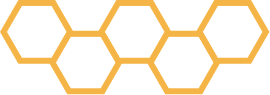

The immense value of datacenters is contained within their primary functions, the storing, processing and dissemination of data and critical applications. Where datacenters utilise data efficiently and are able to mine the value from this data, construction teams often fail to extract the complete potential of data generated during a project.

While the project controls teams often excel at managing cost, commercials and schedule, and there is often some analytics focused on BIM, Quality and Documentation, the full potential of these services are never actually realised. Often projects have a bulky and manual extract, transfer and load process that doesn’t offer flexibility and real-time reporting due to tool restraints, technical restraints and general lack of expertise in data science and implementation.
On any project, there are often a few systems at play that cover BIM, Quality and Documentation:
Electronic Document Management System (EDMS)
Documentum, Aconex, Viewpoint 4Projects, EnterpriseBridge, etc.
Common Data Environment (CDE)
BIM360, ProjectWise, Procore, BIMPLUS, etc.
Commissioning environment
BIM360 Field, Commissioning trackers, etc
Master Project Folders
Cloud and extranet based folder structures, trackers, spreadsheets, etc.
Our teams have the experience and expertise to leverage application programming interfaces (APIs), Extraction, Transformation and Load (ETL) processes and fully automated, live reporting to ensure that you can demonstrate where key blockers and issues can be found, plus extract the additional value from these datasets that are often left behind in most projects.
On top of that, we provide compelling analytics and visualisations to ensure that the data we’ve extracted tells its story and provides clear and visible detail on where you are in the project, how your progressive handover is developing and where each detail can be found across the project data environment.
For further information, please contact us and we would be happy to develop a solution that fits your needs and requirements.
 REPORTING AND ANALYTICS
REPORTING AND ANALYTICS